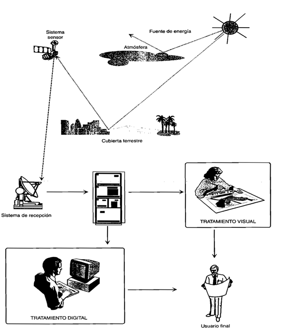

Definición:
La teledetección ambiental es una técnica aplica que nos permite obtener imágenes de la superficie terrestre mediante sensores alojados en plataforma espaciales.
Elementos de la teledetección:
1- Fuente de energía: origen de la radiación electro- magnética que detecta el sensor. La fuerte de energía mas importante y utilizada, es el sol.
2- Cubierta terrestre: compuesta por diferentes masas de vegetación, suelos, agua o construcciones humana.
3- Sistema sensor: compuesto por un sensor y la plataforma que lo aloja, se encarga de captar la energía procedente de las cubiertas terrestres.
4- Sistema de recepción- comercialización: sistema donde se recibe la información transmitida por la plataforma.
5- Interprete: se carga de convertir los datos recabados, en información temática de interés, ya sea visual o digital.
6- Usuario final: encargado de analizar el documento final,así como también resolver las consecuencias que se presenten en el.
